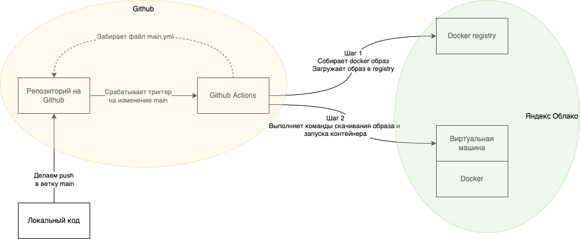

Автоматический деплой FastAPI в Яндекс Облако при помощи Github Actions и Docker
ср 31 августа 2022При помощи данного рецепта можно значительно упростить себе жизнь и настроить автодеплой в Яндекс Облако(да и в любое другое облако) приложения на основе FastAPI.
Общая схема процесса:

1. Минимальное приложение FastAPI
Мы будем рассматривать процесс деплоя на примере базового приложения FastAPI. Ниже его код.
from fastapi import FastAPI
app = FastAPI()
@app.get("/hello")
def say_hello():
return {"Hello": "World"}
Наше минимальное приложение делает следующее:
- Импортирует FastAPI (его сначала надо установить https://fastapi.tiangolo.com/#installation)
- Создаем приложение FastAPI
- Определяем один ресурс нашего api GET /hello
- Данный ресурс обрабатывается функцией say_hello(), которая возвращает наш json {“Hello”: “World”}
Подробнее про FastAPI можно почитать в официальной документации https://fastapi.tiangolo.com/tutorial/
Запустить и протестировать наше приложение можно командой uvicorn main:app.
2. Упаковываем приложение в Docker
Для того, чтобы деплоить автоматически и не задумываться что там может пойти не так, нам нужно упаковать наше приложение в Docker образ из которого мы сможем деплоить куда угодно.
Я предпочитаю всегда работать с Docker контейнерами, даже во время разработки на локальной машине. Это позволяет не засорять свою ОС различным софтом, пакетами и прочими зависимостями, а также я всегда уверен, что мое приложение в любой момент без проблем задеплоится.
Итак, создадим наш Dockerfile в корне проекта.
FROM python:3.9
WORKDIR /code
COPY ./requirements.txt /code/requirements.txt
RUN pip install --no-cache-dir --upgrade -r /code/requirements.txt
COPY . /code
RUN ["python", "-m", "pytest"]
CMD ["uvicorn", "app.main:app", "--host", "0.0.0.0", "--port", "8080", "--reload"]
Разберем каждую строку.
За основу нашего образа берем контейнер с Python нужной нам версии
FROM python:3.9
Устанавливаем /code рабочей директорией
WORKDIR /code
Копируем в нашу рабочую директорию файл с зависимостями
COPY ./requirements.txt /code/requirements.txt
Устанавливаем все зависимости нашего приложения. Флаг —no-cache-dir нужен, чтобы Docker не кэшировал зависимости. Если его не указать, размер образа будет больше.
RUN pip install --no-cache-dir --upgrade -r /code/requirements.txt
Копируем весь код из текущей директории на локальной машине(наш проект) в папку /code контейнера
COPY . /code
Запускаем тесты, если есть. Я всегда включаю прогон тестов на стадию сборки контейнера, чтобы отловить баги на самом раннем этапе
RUN ["python", "-m", "pytest"]
Собственно команда запуска сервера
CMD ["uvicorn", "app.main:app", "--host", "0.0.0.0", "--port", "8080", "--reload"]
Теперь можно локально собрать наш образ командой
docker build -t helloapi .
И далее запустить контейнер:
docker run -p 8080:8080 --name helloapi-container -v "${path}:/code" helloapi
Параметр -p указывает на то что мы настроили маппинг порта контейнера и хоста, параметром -v мы сопоставили папку /code контейнера и текущую дерикторию с кодом проекта, чтобы uvicorn мог автоматически перезагружаться при изменении исходного кода. В production это лучше отключать
Подробнее о Dockerfile и работе с контейнерами читаем в официальном туториале: https://docs.docker.com/get-started/
3. Создаем конфигурацию workflows для Github Actions
Github Actions подхватывает файл с названием ветки, например для main: .github/workflows/main.yml
В этом файле должны быть описаны все jobs и соответствующие им шаги. У нас будет два “джоба”: build и deploy.
Итак, весь файл:
name: ci
on:
push:
branches:
- 'main'
jobs:
build:
runs-on: ubuntu-latest
steps:
-
name: Checkout
uses: actions/checkout@v2
-
name: Yandex Cloud login
uses: yc-actions/yc-cr-login@v1
with:
yc-sa-json-credentials: ${{ secrets.YC_SA_JSON_CREDENTIALS }}
-
name: Build, tag, and push image to Yandex Cloud Container Registry
env:
CR_REGISTRY: ${{secrets.YANDEX_REGISTRY_ID}}
CR_REPO: ${{secrets.YANDEX_REPO_NAME}}
IMAGE_TAG: ${{ github.sha }}
VM_ID: ${{secrets.VM_ID}}
run: |
docker build -t cr.yandex/$CR_REGISTRY/$CR_REPO:$IMAGE_TAG .
docker push cr.yandex/$CR_REGISTRY/$CR_REPO:$IMAGE_TAG
deploy:
needs: build
runs-on: ubuntu-latest
steps:
- name: Deploy to server via ssh
uses: appleboy/ssh-action@master
with:
host: ${{ secrets.HOST }}
username: ${{ secrets.USERNAME }}
key: ${{ secrets.KEY }}
port: ${{ secrets.PORT }}
script: |
sudo docker pull cr.yandex/${{secrets.YANDEX_REGISTRY_ID}}/${{secrets.YANDEX_REPO_NAME}}:${{github.sha}}
sudo docker rm -f ${{secrets.PROJECT_NAME}}
sudo docker run -d -p 8080:8080 --name ${{secrets.PROJECT_NAME}} --hostname backend -e JIRA_SERVER_PERSONAL_TOKEN=${{secrets.JIRA_SERVER_PERSONAL_TOKEN}} -e JIRA_SERVER_BASE_URL=${{secrets.JIRA_SERVER_BASE_URL}} -e SERVICE_ADDRESS=${{secrets.SERVICE_ADDRESS}} -e MATTERMOST_BASE_URL=${{secrets.MATTERMOST_BASE_URL}} -e MATTERMOST_TOKEN=${{secrets.MATTERMOST_TOKEN}} -e YANDEX_CONNECT_BASE_URL=${{secrets.YANDEX_CONNECT_BASE_URL}} -e YANDEX_ORG_ID=${{secrets.YANDEX_ORG_ID}} -e YANDEX_TOKEN=${{secrets.YANDEX_TOKEN}} -e YANDEX_TRACKER_BASE_URL=${{secrets.YANDEX_TRACKER_BASE_URL}} cr.yandex/${{secrets.YANDEX_REGISTRY_ID}}/${{secrets.YANDEX_REPO_NAME}}:${{github.sha}}
sudo docker network connect network hippas-backend
Рассмотрим подробно.
Trigger
Тут все просто. Сообщаем Github Actions по какому триггеру будет выполняться workflow.
on:
push:
branches:
- 'main'
Build Job
Сообщаем раннеру Github на чем будем билдить наш образ. У Github выбор не большой, поэтому берем последнюю Ubuntu
jobs:
build:
runs-on: ubuntu-latest
На этом шаге вызываем стандартный Action, который скачивает наш репозиторий на раннер
-
name: Checkout
uses: actions/checkout@v2
Логинимся в яндексовой консоли припомощи яндексового Action. Про параметр YC_SA_JSON_CREDENTIALS напишу позже
-
name: Yandex Cloud login
uses: yc-actions/yc-cr-login@v1
with:
yc-sa-json-credentials: ${{ secrets.YC_SA_JSON_CREDENTIALS }}
Устанавливаем env переменные(о них позже) и выполняем две команды
-
name: Build, tag, and push image to Yandex Cloud Container Registry
env:
CR_REGISTRY: ${{secrets.YANDEX_REGISTRY_ID}}
CR_REPO: ${{secrets.YANDEX_REPO_NAME}}
IMAGE_TAG: ${{ github.sha }}
VM_ID: ${{secrets.VM_ID}}
run: |
docker build -t cr.yandex/$CR_REGISTRY/$CR_REPO:$IMAGE_TAG .
docker push cr.yandex/$CR_REGISTRY/$CR_REPO:$IMAGE_TAG
Билдим наш образ из исходников и проставляем в качестве тега путь до яндекс registry. В качестве IMAGE_TAG используется переменная github.sha, вычисляющаяся из хэша нашего коммита
docker build -t cr.yandex/$CR_REGISTRY/$CR_REPO:$IMAGE_TAG .
Осталось лишь запушить наш образ в registry Яндекса
docker push cr.yandex/$CR_REGISTRY/$CR_REPO:$IMAGE_TAG
Deploy Job
deploy:
needs: build
runs-on: ubuntu-latest
needs указывает, что наш deploy должен проходить после завершения build
Используем Action для выполнения команд через ssh https://github.com/appleboy/ssh-action
steps:
- name: Deploy to server via ssh
uses: appleboy/ssh-action@master
Далее мы выполняем команды на нашем сервере.
Скачиваем сбилденный ранее образ
sudo docker pull cr.yandex/${{secrets.YANDEX_REGISTRY_ID}}/${{secrets.YANDEX_REPO_NAME}}:${{github.sha}}
Удаляем предыдущий контейнер если есть. Он нам больше не нужен. -f форсирует удаление если контейнер запущен
sudo docker rm -f ${{secrets.PROJECT_NAME}}
Запускаем контейнер из нашего образа
sudo docker run -d -p 8080:8080 --name ${{secrets.PROJECT_NAME}} cr.yandex/${{secrets.YANDEX_REGISTRY_ID}}/${{secrets.YANDEX_REPO_NAME}}:${{github.sha}}
Вот и все, настройка на уровне кода закончена. Осталось настроить сервисы.
Но сначала надо почитать документацию по Github Actions: https://docs.github.com/en/actions/using-workflows/about-workflows
4. Настройка Яндекс Облака
Здесь все достаточно просто. Нам нужно создать виртуальную машину на основе Ubuntu и установить на нее Docker. При создании машины нужно также создать сервисный аккаунт и сохранить приватный ключ для доступа к ВМ.
Также необходимо сохранить следующие данные:
- Идентификатор виртуальной машины
- ID yandex docker registry
- Приватный ключ для доступа к ВМ
- JSON с данными авторизации сервисного аккаунта
- Название репозитория docker образов
Последний можно получить воспользовавшись инструкцией: https://cloud.yandex.ru/docs/cli/operations/authentication/service-account
5. Настройка Github
В Gihub нужно настроить секреты, которые будут использованы при билде и деплое.
Настроить секреты можно в разделе Settings→Secrets→Actions репозитория на Github.
Параметров надо указать много, так что перечислю их все списком с пояснениями:
- YC_SA_JSON_CREDENTIALS - json key, полученный на шаге 4
- YANDEX_REGISTRY_ID - id docker репозитория яндекс облака
- YANDEX_REPO_NAME - название репозитория docker образов яндекс облака
- VM_ID - id виртуальной машины в Яндекс Облаке
- PROJECT_NAME - название проекта
6. Заключение
Вот и все. Теперь каждый раз при выполнении push или мержа в ветку main, будут запускаться наши jobs. Посмотреть выполнение можно во вкладке Actions репозитория.
Важно, что по аналогии можно запилить билд и деплой практически любого приложения в любое облако(или даже просто на физический сервер).
Разумеется, для больших проектов было бы неплохо использовать kubernetes и прочую оркестрацию, но для небольших проектов приведенный способ работает на ура и значительно упрощает разработку по сравнению с классическим “git pull на сервере”